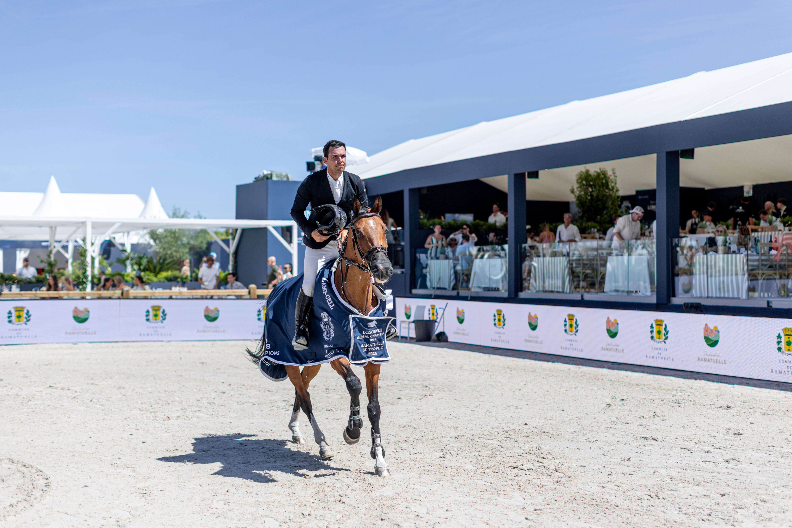

Sergio Álvarez Moya gana la prueba inaugural del CSI5* LGCT de Saint-Tropez con No Nonsense TN
El jinete español Sergio Álvarez Moya estrenó este miércoles la etapa de Saint-Tropez del Longines Global Champions Tour con una victoria de prestigio en la prueba inaugural del CSI5*, disputada en la finca de Ramatuelle. Álvarez Moya detuvo el crono en 66,43 segundos a lomos de No Nonsense TN y se impuso con…

Uso editorial
El jinete español Sergio Álvarez Moya estrenó este miércoles la etapa de Saint-Tropez del Longines Global Champions Tour con una victoria de prestigio en la prueba inaugural del CSI5*, disputada en la finca de Ramatuelle. Álvarez Moya detuvo el crono en 66,43 segundos a lomos de No Nonsense TN y se impuso con holgura sobre el alemán Hans-Dieter Dreher, segundo con Elysium en 67,86 segundos, ambos sin penalización.
El podio lo cerró el francés Julien Anquetin con Beau de Laubry Z, que firmó el mejor crono absoluto del recorrido (64,31 segundos) pero arrastró cuatro puntos de penalización, lo que le relegó al tercer puesto por detrás de los dos binomios sin faltas. El cierre apretado del podio confirma el alto nivel de la nómina del LGCT St-Tropez, que reúne esta semana al pelotón del top mundial con vista a la próxima cita parisina.
La prueba puntúa para el Longines Ranking Group y marca el arranque de una de las etapas más codiciadas del circuito, marcada por el ambiente del litoral mediterráneo y por la antesala del Global Champions Prix y el Grand Prix LGCT del fin de semana. Para Álvarez Moya, supone un balón de oxígeno en la clasificación mundial y consolida su buen momento en el bloque europeo del calendario CSI5*.
El triunfo refuerza también la apuesta del jinete asturiano por No Nonsense TN, una de sus principales bazas para la temporada, en un escenario donde la victoria en cualquier prueba se reparte entre nombres del top 20 mundial.
— Redacción de Hípica al Día